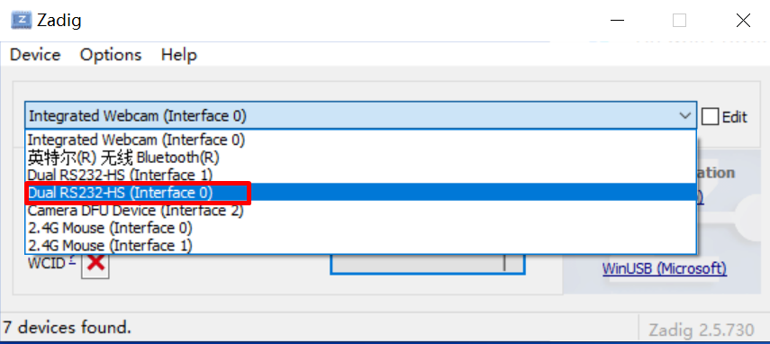

HPM SDK Overview¶
The HPM SDK Project is a software development kit based on HPMicro’s MCUs, which supports a wide range of MCUs, based on the BSD license, including drivers, middleware and RTOS, such as littlevgl/ lwIP/ TinyUSB/ FreeRTOS, etc. It supports a large number of Boards.
SDK directory¶
Name |
Description |
|---|---|
<HPM_SDK_BASE>/arch |
cpu architecture |
<HPM_SDK_BASE>/boards |
board support files |
<HPM_SDK_BASE>/cmake |
cmake extensions |
<HPM_SDK_BASE>/components |
software components |
<HPM_SDK_BASE>/doc |
documentation |
<HPM_SDK_BASE>/drivers |
low level driver files |
<HPM_SDK_BASE>/middleware |
middleware files |
<HPM_SDK_BASE>/samples |
sample source for drivers, middleware, components |
<HPM_SDK_BASE>/scripts |
util scripts |
<HPM_SDK_BASE>/soc |
SoC specific source |
<HPM_SDK_BASE>/utils |
util source |
HPM SDK Quick Start Guide¶
Minimum required version of dependencies are:¶
Name |
Version |
|---|---|
CMake |
3.13 |
Python |
3.8 |
Install Dependencies¶
Ubuntu
install tools
sudo apt install build-essential cmake ninja-build libc6-i386 libc6-i386-cross libstdc++6-i386-cross
install python3 (3.8.5 minimum) and pip
sudo apt install python3 python3-pip
Windows
Windows Command Prompt The following commands assume you are using cmd.exe, it might differ if you are using PowerShell.
Install Chocolatey (https://chocolatey.org/) It is a package manager for Windows, with which it’s not that difficult to install native Windows dependencies.
Install Chocolatey by the following instructions on the Chocolatey Install (https://chocolatey.org/install) page.
Open “cmd.exe” as “Administrator”
Disable global confirmation to avoid having to confirm installation of individual programs:
choco feature enable -n allowGlobalConfirmation
Install CMake
choco install cmake --installargs 'ADD_CMAKE_TO_PATH=System'
Install other tools:
choco install git python ninja
Close the Administrator command prompt window.
Prepare Toolchain & Environment Variables
Supported toolchains:
gnu-gcc <– default toolchain
nds-gcc
Toolchain setup:
gnu-gcc:
Grab a copy of toolchain zip package and unzip to certain path, take TOOLCHAIN_PATH for example, (riscv32-unknown-elf-gcc is supposed to be found in TOOLCHAIN_PATH/bin)
Declare a system environment variable of “GNURISCV_TOOLCHAIN_PATH” to the path of toolchain:
Linux, taking zsh for example (replace TOOLCHAIN_PATH with the path of toolchain on your workstation):
export GNURISCV_TOOLCHAIN_PATH=TOOLCHAIN_PATH export HPM_SDK_TOOLCHAIN_VARIANT=
Windows command prompt:
set GNURISCV_TOOLCHAIN_PATH=TOOLCHAIN_PATH set HPM_SDK_TOOLCHAIN_VARIANT=
nds-gcc:
Grab a copy of toolchain zip package and unzip to certain path, take TOOLCHAIN_PATH for example, (riscv32-elf-gcc is supposed to be found in TOOLCHAIN_PATH/bin)
Declare two system environment variables: “GNURISCV_TOOLCHAIN_PATH” to the path of toolchain; “HPM_SDK_TOOLCHAIN_VARIANT” to “nds-gcc”:
Linux, taking zsh for example (replace TOOLCHAIN_PATH with the path of toolchain on your workstation):
export GNURISCV_TOOLCHAIN_PATH=TOOLCHAIN_PATH export HPM_SDK_TOOLCHAIN_VARIANT=nds-gcc
Windows command prompt:
set GNURISCV_TOOLCHAIN_PATH=TOOLCHAIN_PATH set HPM_SDK_TOOLCHAIN_VARIANT=nds-gcc
Note: For windows, Andes compiler needs following libraries: - cygwin1.dll - cygncursesw-10.dll make sure its path is appended to the system environment variable “PATH”.
Environment Variables:
Using provided scripts to set the environment variable:
Linux:
$ source env.shWindows command prompt:
env.cmd
Manually declare a environment variable of “HPM_SDK_BASE” to the path of SDK root:
Linux, taking zsh for example (assume SDK is located at $HOME/hpm_sdk):
export HPM_SDK_BASE=$HOME/hpm_sdk
Windows command prompt (assume SDK is located at c:\hpm_sdk):
set HPM_SDK_BASE=c:\hpm_sdk
Install python dependencies
Linux:
pip3 install --user -r "$HPM_SDK_BASE/scripts/requirements.txt"
Window (by default, python3/pip3 is not available after Python 3.x installed on Windows, but only python/pip):
pip install --user -r "%HPM_SDK_BASE%/scripts/requirements.txt"
Build An Application with GNU GCC toolchain On finishing the steps mentioned above, SDK projects can be generated and built. The following steps describe how a demo can be built:
Go to application directory, taking hello_world for example:
cd samples/hello_worldcreate a directory for build
Linux:
mkdir build
Windows:
md build
Change directory to “build”
cd build
Generate build files for Ninja:
cmake -GNinja -DBOARD=hpm6750evk ..Note: if it complains about “CMAKE_MAKE_PROGRAM is not set”, please append -DCMAKE_MAKE_PROGRAM=YOUR_MAKE_EXECUTABLE_PATH to the previous command (NINJA_PATH is the folder in which ninja can be found):
cmake -GNinja -DBOARD=hpm6750evk -DCMAKE_MAKE_PROGRAM=NINJA_PATH/ninja ..
Building:
ninja
When it’s done the elf and other application related files can be found in the directory of “output”, like map file, assembly source or binary file
Quick Guide to Run/Debug An Application (hello_world):
Wire up the board, including debug probe (by default it supports jlink) and serial port
power up the board
open console connecting to the debug console (target serial port) with baudrate of 115200
get a copy of openocd. it can be installed via package management system or downloaded from sourceforge or github. But please make sure its revision is > 0.11
Go to SDK root directory, run provided environment variable scripts:
Linux:
$ source env.shWindows command prompt:
env.cmd
or setup environment variable OPENOCD_SCRIPTS manually:
Linux:
$ export OPENOCD_SCRIPTS=${HPM_SDK_BASE}/boards/openocd
Windows:
set OPENOCD_SCRIPTS=%HPM_SDK_BASE%\boards\openocd
Start openocd with several configuration files in order of type of probe, type of core, type of board. For example, the following command will setup an openocd gdb server with ft2232 to single core on hpm6750evk
openocd -f probes/ft2232.cfg -f soc/hpm6750-single-core.cfg -f boards/hpm6750evk.cfg
Note: If using FTDI debugger and meet
Error: libusb_open() failed with LIBUSB_ERROR_NOT_FOUND, please check the FTDI usb driver. If it is not installed correctly, use zadig to update:Open zadig, click Options-> List All Devices.

Select Dual RS232-HS (Interface 0).

Then click Install Driver or Replace Driver.

Go to hello_world directory
cd samples/hello_worldopen up another terminal to start a gdb client
gnu-gcc:
TOOLCHAIN_PATH/bin/riscv32-unknown-elf-gdb
nds-gcc:
TOOLCHAIN_PATH/bin/riscv32-elf-gdb
connect gdb client to the gdbserver started by openocd, (by default, gdbserver port is 3333)
gdb> file build/output/hello_world.elf gdb> target remote localhost:3333 gdb> load gdb> b main gdb> c
on the debug console, “hello_world” is printed.
Build An Application with Segger Embedded Studio
Segger Embedded Studio for RISC-V can be downloaded from https://www.segger.com/downloads/embedded-studio/
Project file for Segger Embedded Studio will be generated while generating build files for Ninja mentioned in “Build An Application with GNU GCC toolchain”->”4. Generate build files for Ninja”
The project file (.emProject) can be found at build/segger_embedded_studio/.
Note: openocd executable needs to be found in the PATH variable of current console, otherwise debug configuration will not be generated to project file and needs to be configured manually in Segger Embedded Studio later.
Community Support¶
github page: https://hpmicro.github.io
github: https://github.com/hpmicro/hpm_sdk
gitee: https://gitee.com/hpmicro/hpm_sdk